The Wrong Website Is Asking the Right Person to Authenticate
We have spent decades improving how users prove who they are. A new phishing technique raises a much more uncomfortable question: Why doesn’t the destination have to prove itself too?
We have spent decades improving how users prove who they are. A new phishing technique raises a much more uncomfortable question: Why doesn’t the destination have to prove itself too?
New research into passkey attacks reveals why phishing-resistant authentication is an important advance, but cannot be the end of the identity-security conversation.

Will MFA slow down your work login? Compare traditional MFA friction with faster passwordless authentication from PasswordFree® and NoPass™.
How long does MFA implementation take? Compare typical timelines and learn how PasswordFree and NoPass accelerate secure passwordless deployment.
AI is transforming fraud through synthetic identities, deepfakes and digital impersonation. Learn why traditional identity verification is under pressure and how behavioral intelligence, passwordless authentication, authentication intent an

Lost your phone with MFA enabled? Learn how Emergency PIN Authentication, secure backup, and passwordless recovery keep users productive.
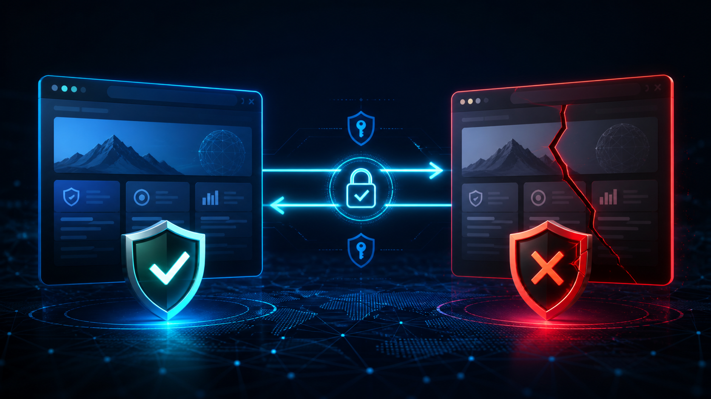
Imposter websites and lookalike domains are one of today's fastest-growing cyber threats. Learn how traditional MFA can still be vulnerable to fake websites and discover how PasswordFree and NoPass, powered by patented Full Duplex Authent

What are the security risks of MFA? Review phishing, SMS weaknesses, MFA fatigue, lost devices, friction, and administrative complexity.

Can SMS replace an authenticator app? Compare text-message MFA risks, authenticator apps, and phishing-resistant passwordless authentication.
Can employers require MFA for remote workers? Review policy, privacy, device, accessibility, and business-continuity considerations.
Can a hardware key replace an authenticator app? Compare phishing resistance, usability, recovery, and enterprise deployment options.

What should you never use for security questions? Learn why public personal facts weaken account recovery and how passwordless authentication helps.
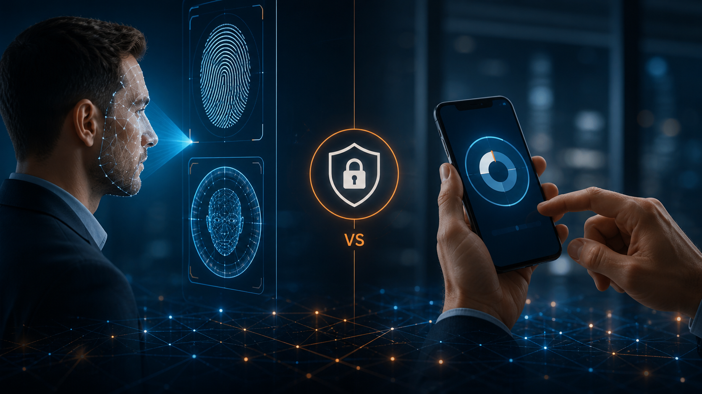
If you've ever sighed after approving yet another authentication prompt or scrambled to find your phone just to log into your email, you're not alone. Multi-Factor Authentication (MFA) has earned a reputation for being both one of the most
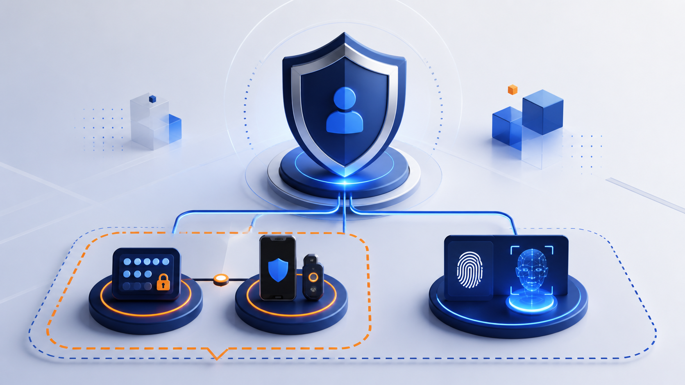
Learn the difference between 2FA and MFA, explore the main authentication factor types, and see why phishing-resistant passwordless authentication offers stronger protection.

Can your employer see what's on your personal phone if you use MFA for work? Learn the difference between MFA and device management, understand employee privacy considerations, and discover how PasswordFree and NoPass, powered by patented

How does biometric authentication work? Learn how fingerprint and facial recognition verify identity, why decentralized biometric storage matters, and how PasswordFree and NoPass, powered by patented Full Duplex Authentication®, combine p

What's the difference between SMS and push notifications for MFA? Compare the security, convenience, phishing risks, SIM-swapping vulnerabilities, and MFA-fatigue risks of each—and learn how PasswordFree and NoPass, powered by patented Fu
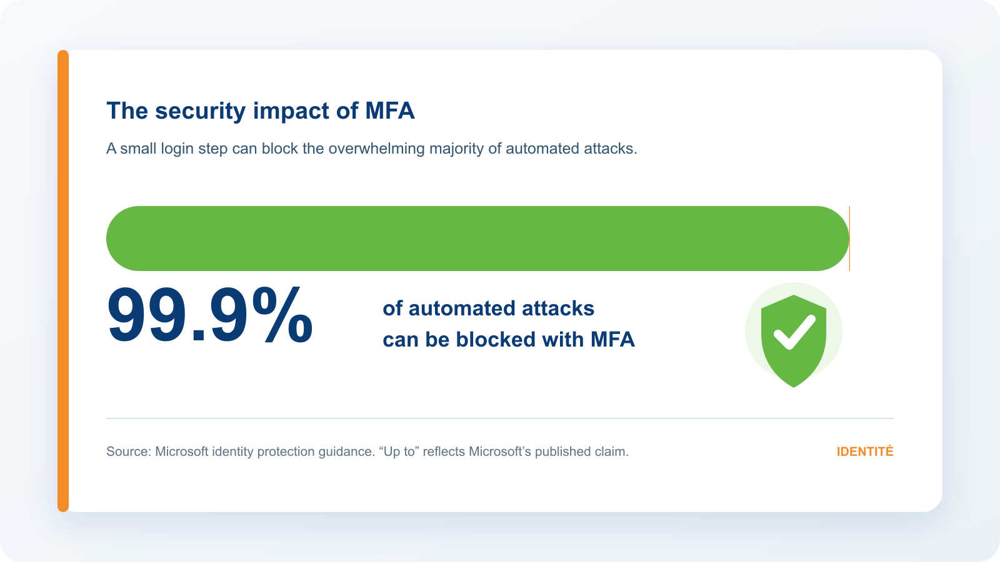
Is MFA worth the extra step? Compare its small time cost with stronger security, compliance benefits, and protection from expensive data breaches.
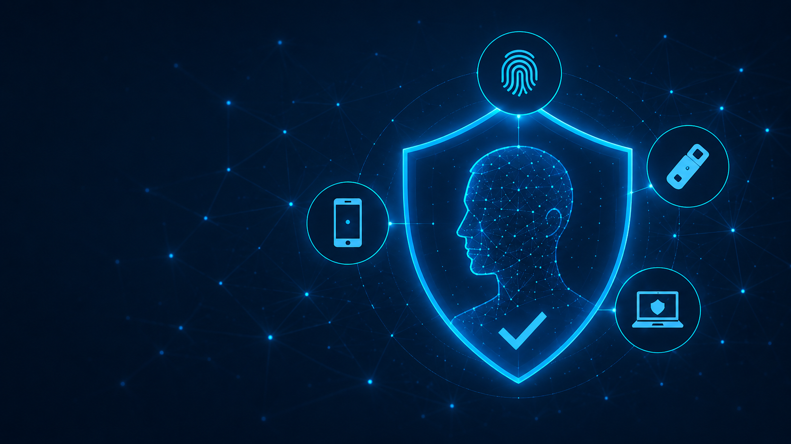
Passwordless authentication removes credential risk, but continuous identity assurance is still essential. Learn how Full Duplex Authentication protects sessions.

How to increase sales on Shopify using a simple passwordless login? We've developed a teeny-tiny app that does exactly that. Read on!

Passwordless login is the future of user authentication. We've made it affordable for Shopify store owners. See how to install it in 40 sec in our new article.

We at Identité have launched our PasswordFree app for Shopify. Now affordable and innovative passwordless authentication has become even more accessible.

Snowflake Data Breach Campaign made it to the headlines. Read this blog post to see the lessons we all can learn from a big player's failure.
In this article, our Lead BA shares how we discovered how to login without a password and even an email. We made a special feature around that. It's a secure, fast and seamless user flow we're really proud of.

A Cyber Security engineer's take on Verizon’s data breach report 2024. We help businesses better understand vulnerabilities and take actionable steps to improve security.
Password reset may seem like a trifle for a big company. In reality it translates into thousands of unplanned expenses. Read how to reduce those costs.
Discover why SMS OTP verification falls short against phishing attacks. Protect your accounts with PasswordFree MFA by Identite. Read here
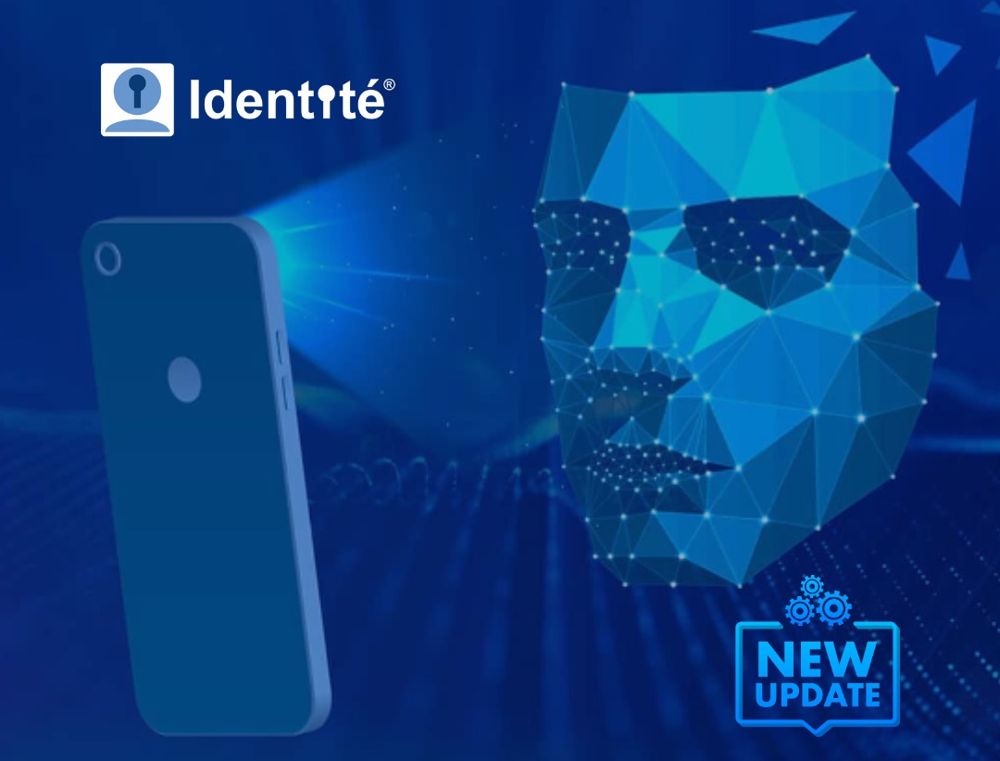
3 Things to Know about PCI-DSS 4.0 MFA
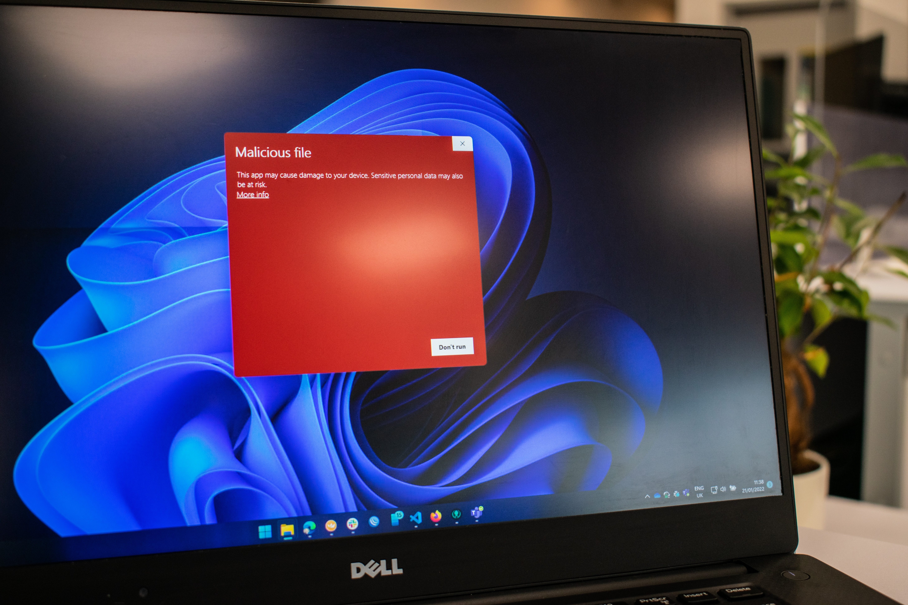
Review CrowdStrike's real-world MFA bypass and credential theft case study, and learn why stronger identity assurance is needed beyond conventional MFA.
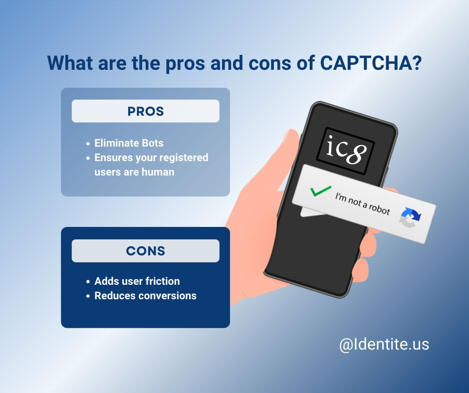
Do I need both CAPTCHA and MFA?Because PasswordFree MFA is also bot resistant, there is a strong case for why it can replace CAPTCHA. It has low friction, is simple to understand and it protects users against other security threats such a
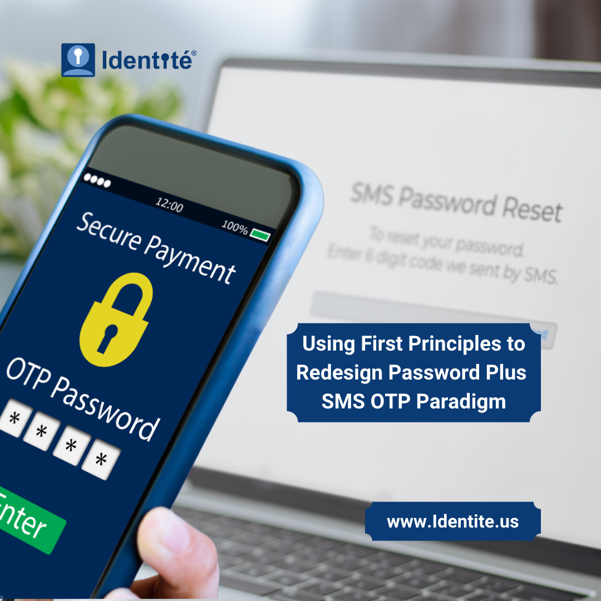
This article discusses the emergence of OTP, its problems and how to resolve them with Identite MFA.
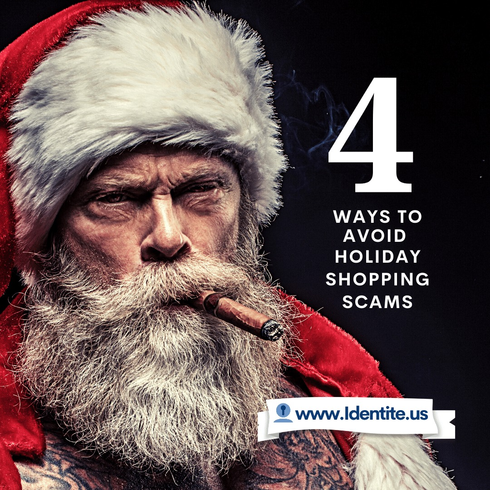
Avoid holiday shopping scams with four practical ways to recognize phishing, fake delivery messages, fraudulent websites, and unsafe payment requests.
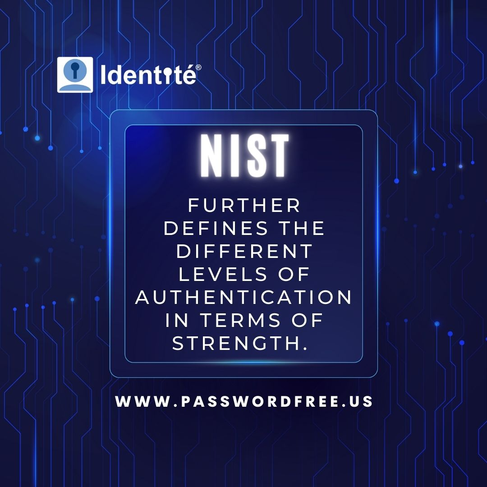
Updated NIST Guidelines for Authentication 800-63-B further defining the different levels of authentication strength for “verifier impersonation resistance”. This is a key defense against all forms of social engineering, MitM, Browser-n-Br

cyber-insurance providers require customers to take a cyber security assessment and even provide their clients with a security controls checklist.MFA is regarded as a key defense against nearly all forms of cyber-attacks. At Identité, we ar
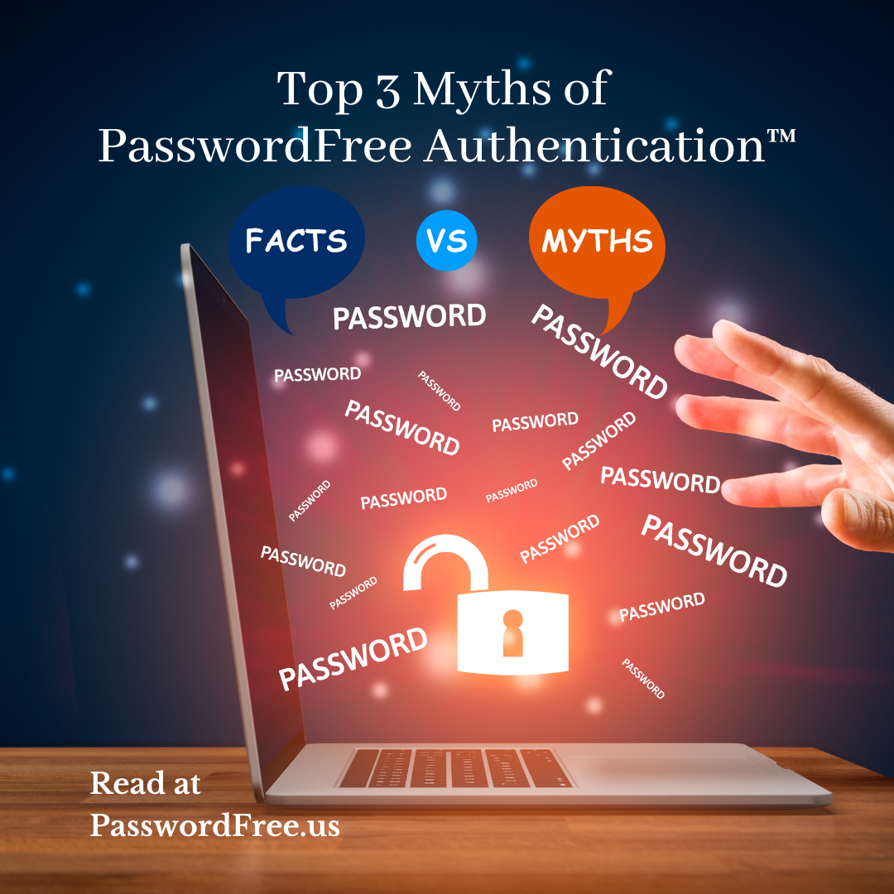
Examine three common myths about passwordless authentication and how secure, user-friendly authentication can reduce the risks of shared secrets.
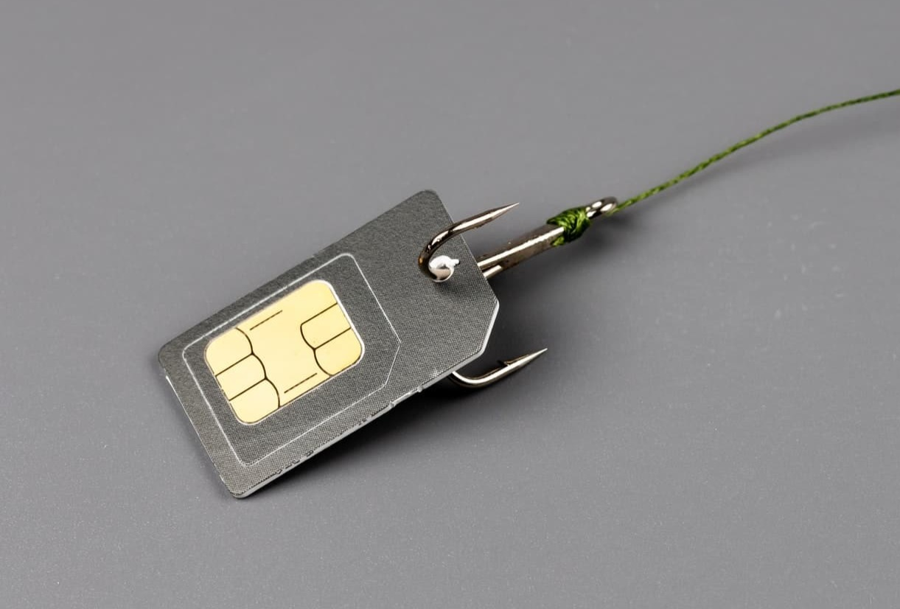
This article discusses what SIM swapping is, why this issue occurs and how it can be prevented with NoPass.
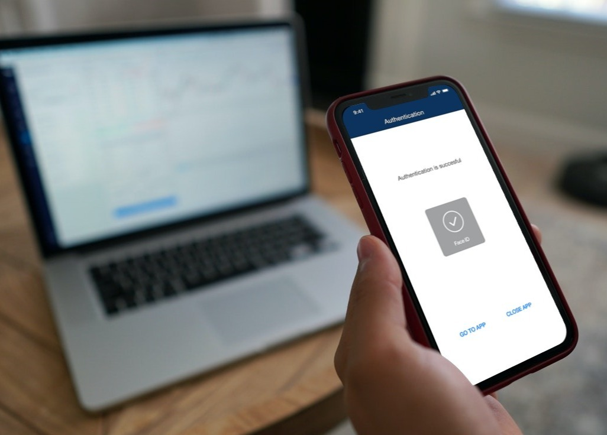
Issues with 1-way authentication & how FDA solves them.
This article discusses what Identity and Access Management (IAM) is and considers its components.
This article defines & discusses the differences between AD FS, SAML, OpenID Connect, and Oauth Authentication Protocols and how they are used.
This article discusses how system admins can secure applications with Keycloak & MFA solution.
This article discusses common types of bank fraud which can be prevented with a NoPass MFA solution.
Ransomware threats aren't novel, but these attacks had wide-reaching effects in 2021. Read how NoPass can minimize their effects on the enterprise's security.

Read about OAuth security standards, its history and current vulnerability and learn how your organization's seccurity can be protected.
The remote workforce is evolving—learn how businesses can adapt to new security challenges and ensure seamless, secure remote access. Read more on Identité!
Learn how attackers use open-source intelligence from social media, email, DNS, and public records to target people and bypass security controls.